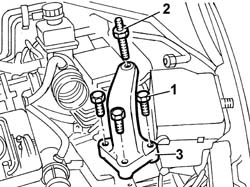

1008A42 Power unit RIGID MOUNT - GEARBOX side - R&R
- Path
- Procedures > 10 ENGINE > 1008 POWER UNIT SUPPORTS > 1008A power unit fastenings > 1008A42 Power unit RIGID MOUNT - GEARBOX side - R&R
- Kind
- repair procedure (removal / refitting; the operation number is the code)
- Applies to
- engines: 2.0 TB, 2.4 20V; all production periods
- Interactive page
- https://sloeber94.github.io/elrnDB-lThss/en/#/74601
Applies to: engines: 2.0 TB, 2.4 20V; all production periods
 Removing
Removing
 Refitting
Refitting- Position the vehicle on a lift.
See in Op. 7055B54 PROTECTION/GUARD under engine - R.R.
- Lower the lift.
See in Op. 7040D50 ENGINE COMPARTMENT UPPER SOUND INSULATION SHIELD - R.R.
Applies to: engines: 2.4 20V; all production periods
Applies to: engines: 2.0 TB; all production periods
See in Op. 1048A21 AIR INLET HOSE FROM INTAKE TO FILTER - R.R.
Applies to: engines: 2.0 TB, 2.4 20V; all production periods
- Position the hydraulic power unit support under the bellhousing in order to work safely.
1. Undo the bolts fixing the rigid support to the gearbox.
2. Undo the pin connecting the rigid support to the flexible mounting.
3. Remove the gearbox side rigid engine support.

Applies to: engines: 2.0 TB, 2.4 20V; all production periods
Refitting
Removing- Position the gearbox side rigid engine support.
- Fasten the pin joining the rigid support to the flexible mounting using the nut, tightening it to the recommended torque.
 | Value - daNm | Fastening | Component | Ø |
|---|---|---|---|---|
. | (on flexible mounting) 5 | Bolt | POWER UNIT GEAR BOX END RIGID MOUNT | M10 X 1.25 |
- Slightly raise the hydraulic lift and tighten the bolts fixing the rigid support to the bellhousing.
| Value - daNm | Fastening | Component | Ø |
|---|---|---|---|---|
. | (on gearbox) 5 | Bolt | POWER UNIT GEAR BOX END RIGID MOUNT | M10 X 1.25 |
- Remove the hydraulic lift.
Applies to: engines: 2.4 20V; all production periods
Applies to: engines: 2.0 TB; all production periods
See in Op. 1048A50 air inlet pipe to turbocharger - r + r
See in Op. 1048A21 AIR INLET HOSE FROM INTAKE TO FILTER - R.R.
Applies to: engines: 2.0 TB, 2.4 20V; all production periods
See in Op. 7040D50 ENGINE COMPARTMENT UPPER SOUND INSULATION SHIELD - R.R.
- Raise the vehicle on the lift.
See in Op. 7055B54 PROTECTION/GUARD under engine - R.R.
- Lower the vehicle and remove it from the lift.
Topics linked from this page (5)
- 1048A21 AIR INLET HOSE FROM INTAKE TO FILTER - R.R.
- 1048A28 vacuum air circuit resonator pipe - r+r
- 1048A50 air inlet pipe to turbocharger - r + r
- 7040D50 ENGINE COMPARTMENT UPPER SOUND INSULATION SHIELD - R.R.
- 7055B54 PROTECTION/GUARD under engine - R.R.